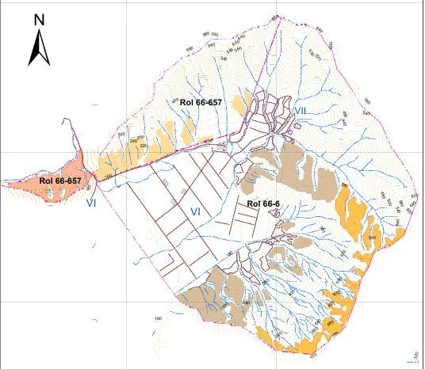
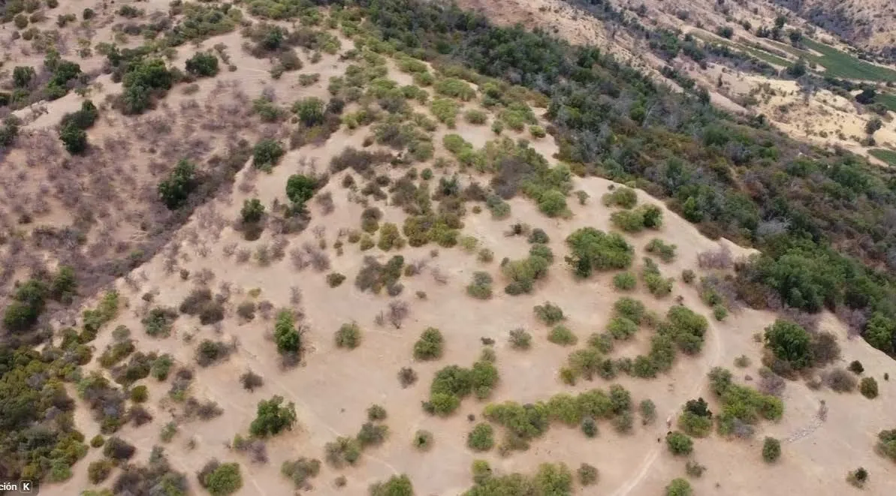
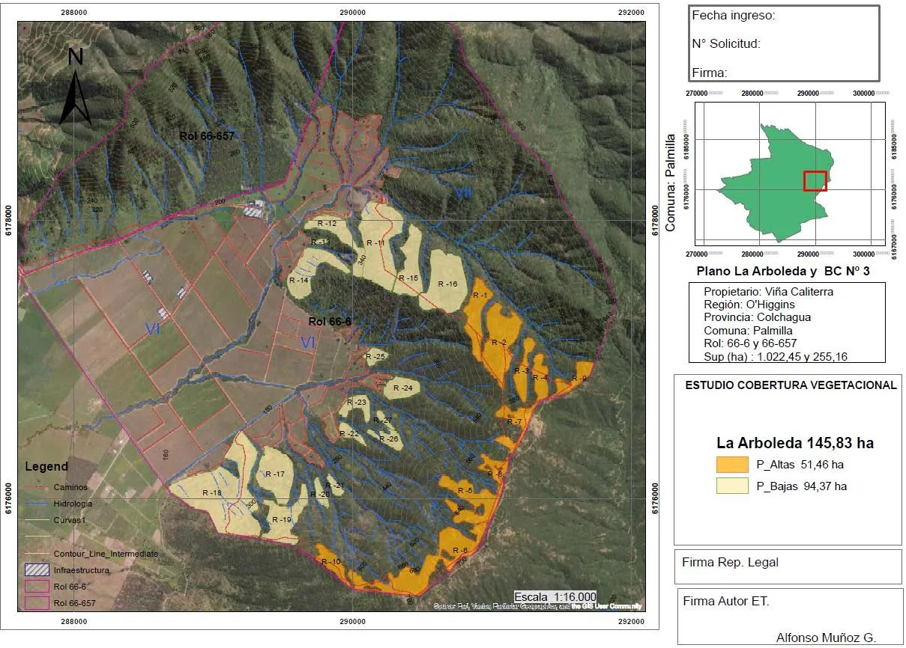
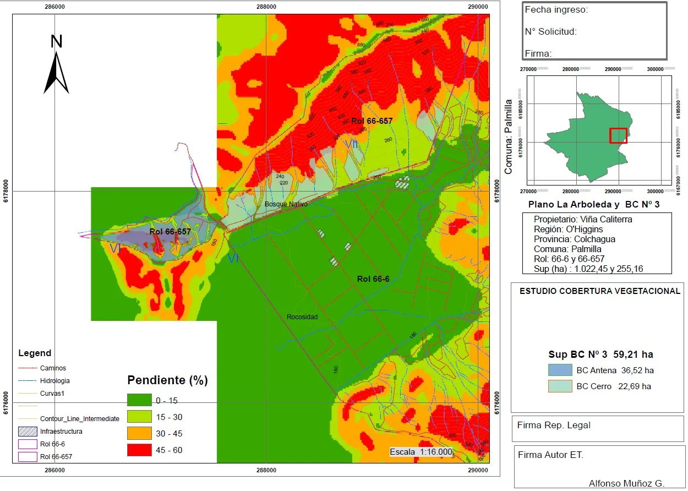
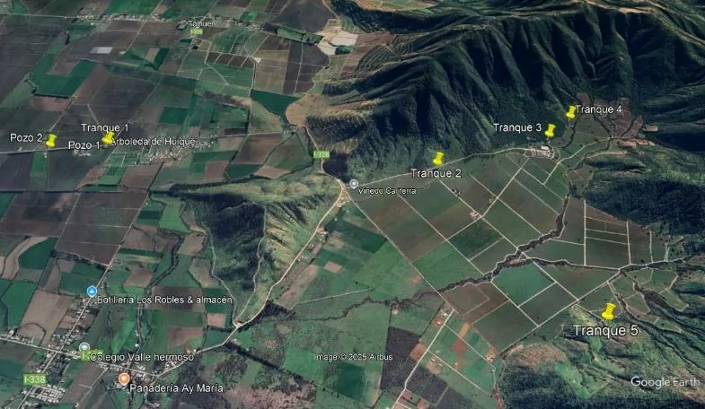
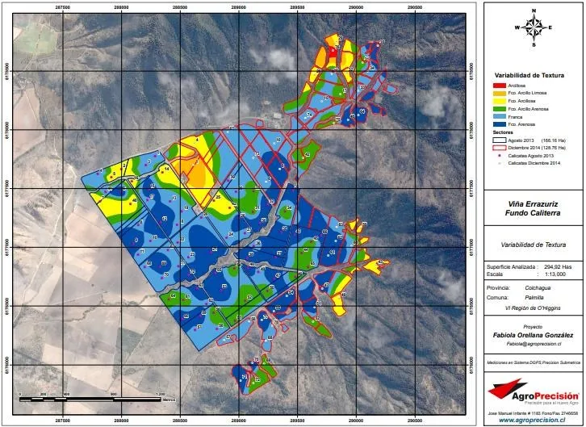

El Huique · Palmilla · Valle de Colchagua · Octubre 2026
Campo Caliterra
1.300 hectáreas con 180 l/s de agua subterránea inscrita, en una cuenca donde ya no se otorgan derechos nuevos, y 479 hectáreas aptas para reconversión frutícola.
Documento preliminar · cifras estimadas sujetas a verificación
En una página
Lo que se compra es tierra plantable con agua propia
Caliterra es un campo consolidado en Colchagua cuyo valor no está en la viña que hoy lo ocupa, sino en una combinación difícil de replicar: tierra plantable, derechos de agua inscritos en un acuífero cerrado a derechos nuevos e infraestructura de riego, drenaje y electrificación ya instalada.
La operación consiste en erradicar las 244 ha de viña y reconvertir el campo a fruticultura de exportación, con hasta 479 ha plantables entre el plano y las laderas habilitables. La viña y la bodega son activos a monetizar en la transición.
El caso de referencia incluye la compra, la erradicación, las obras de regulación de agua y la protección contra heladas. Sin deuda y en dólares reales. El resultado depende sobre todo del rendimiento y precio de la mandarina tardía, por eso se muestran también un escenario conservador y uno favorable.
01 · El activo
Tres unidades legales, una sola operación
220 km al sur de Santiago y 22 km al norte de Santa Cruz, con acceso pavimentado por la Ruta I-30. Altitud de 174 m, a 68 km del Pacífico en línea recta.

| Predio | Rol SII | Superficie | Estado |
|---|---|---|---|
| La Arboleda del Huique | 66-6 | ~1.000 ha | Dominio pleno |
| Parcela 29-A | — | ~30 ha | Dominio pleno |
| Bien Común N°3 | 66-657 | ~276 ha | Posesión 57% |
| Total | ~1.300 ha |
Bien Común N°3: la posesión de 18,33/32 de los derechos (57%) permite solicitar la regularización del total bajo la Ley N°19.386. Trámite estimado de 12 a 24 meses, en paralelo al proyecto y sujeto a estudio de títulos.
| Destino | ha | Situación |
|---|---|---|
| Viña actual | 244 | A erradicar |
| Terreno en rotación | 30 | Plano, listo para plantar |
| Laderas habilitables | 205 | Estudio de cobertura vegetacional |
| Bosque nativo | 800 | Conservación · Ley 20.283 |
| Instalaciones y caminos | 11 | Operativo |
| Superficie plantable | 479 | Viña + rotación + laderas |
Superficie total según el estudio de cobertura vegetacional: 1.311 ha (avalúo SII: 1.056 ha del rol 66-6 y 255 ha del rol 66-657).
Infraestructura instalada
Red operativa
Dos pozos profundos, impulsión en PVC de 355 mm y HDPE de 400 mm, cuatro tranques de paso, cuatro casetas sectoriales y telemetría DGA.
Drenaje y accesos
Red de drenes en 200 ha, electrificación subterránea, caminos interiores y cercos perimetrales.
Bodega y casas
Bodega de 9 millones de litros con sala de barricas, 5.450 m² construidos. Casa patronal y casas de personal.
La inversión histórica en drenaje, electrificación, caminos y conducción de agua ya está hecha y reduce el costo de habilitación. La bodega no forma parte de la tesis frutícola: puede arrendarse a un operador vitivinícola, y el modelo la considera como un ingreso complementario de US$110.000 al año.
02 · Las laderas
205 hectáreas habilitables sin tocar bosque nativo
El estudio de cobertura vegetacional (Alfonso Muñoz G., Ing. Forestal, febrero de 2026) identifica 205 ha de laderas de exposición norte con cobertura arbórea inferior al 25%: matorral degradado por incendios sucesivos que, bajo la Ley 20.283, no constituye bosque nativo y no requiere permiso de CONAF. Las quebradas, sus bordes de protección y el bosque esclerófilo se conservan.

Ladera habilitable · vuelo dron, febrero 2026El estudio separa las laderas por pendiente, y eso define qué se puede plantar en cada una. Solo las de hasta 25% admiten cítricos, unas 38 ha; el resto se habilita con paltos.
| Sector | ha | Aptitud según el estudio |
|---|---|---|
| Bien Común N°3 · cerro | 22,7 | 15–25%: cítricos o paltos |
| La Arboleda · rodales 11, 15, 16 | ~15 | Hasta 25%: cítricos o paltos |
| La Arboleda · resto | ~131 | Paltos |
| Bien Común N°3 · antena | 36,5 | Abrupta: paltos |
| Total laderas | 205 | ~38 cítricos · ~167 paltos |
Por eso el caso de referencia pone cítricos en solo 38 ha de ladera, paltos en 100 ha, y deja 67 ha como reserva para una segunda fase, condicionada a medir la ladera y a la disponibilidad de agua.


03 · Agua
180 l/s en una cuenca donde ya no se otorgan derechos
Por qué estos derechos son escasos
El Acuífero Tinguiririca Inferior fue declarado zona de prohibición por la DGA (Resolución N°23, 1 de febrero de 2020), tras ser área de restricción desde 2009. En esta cuenca ya no se constituyen derechos nuevos: quien quiera agua solo puede comprarla a un titular existente, en un mercado secundario estrecho.
Un derecho inscrito de 180 l/s aquí no se puede replicar. Es la razón principal del valor del activo, y la razón por la que la tesis frutícola es viable en este predio y no en un vecino sin agua.
Derechos subterráneos inscritos en el Conservador de Bienes Raíces de Santa Cruz y monitoreados por telemetría conforme a exigencia DGA.

La restricción es la punta de verano, no el volumen anual
El caso de referencia demanda 3,33 MM m³ al año, el 80% del agua disponible. Pero el riego se concentra entre noviembre y febrero: en enero, con los huertos adultos, la demanda equivale a unos 240 l/s continuos y los pozos entregan 155. La diferencia se resuelve acumulando agua en los meses de superávit para entregarla en los de déficit.
Demanda de riego del caso de referencia frente a la capacidad de los pozos
l/s continuos equivalentes por mes · huertos adultos · octubre a septiembre
| Concepto | m³ / año |
|---|---|
| Disponible · 155 l/s × 85% factor de planta | 4.150.000 |
| Demanda del caso de referencia | 3.330.000 |
| Volumen a regular, noviembre a marzo | ~690.000 |
| Concepto | US$ |
|---|---|
| Tranque HDPE de 150.000 m³ · Ley 21.759 | 750.000 |
| Regulación complementaria · ~540.000 m³ | 2.170.000 |
| Rebombeo y conducción | 200.000 |
| CAPEX hídrico total | 3.120.000 |
Tranque bajo la Ley N°21.759
Desde el 2 de marzo de 2026, los tranques agrícolas fuera de cauce de menos de 150.000 m³ y muro inferior a 7 m no requieren autorización de la DGA ni evaluación ambiental: basta una declaración jurada previa y el registro posterior en el Catastro Público de Aguas. El primer tranque puede estar operativo en 9 a 12 meses.
Volumen complementario
El volumen restante sí requiere evaluación ordinaria ante la DGA y, según su tamaño, el SEIA. Se proyecta mientras los huertos jóvenes consumen una fracción del agua de un huerto adulto. La alternativa a evaluar es complementar con caudal comprado en el mercado secundario.
Estimación preliminar Los requerimientos por cultivo son coeficientes FAO-56 ajustados a la evapotranspiración de Colchagua (~1.220 mm), no un balance hídrico del predio. El volumen anual asociado al título, el caudal sostenido en verano y el dimensionamiento y costo de las obras requieren revisión de la inscripción, pruebas de bombeo, ingeniería de detalle y cotización.
04 · Clima y suelos
Diez temporadas medidas en el propio campo
Registro diario de la estación del predio entre 2015-16 y 2024-25. Suelos Serie Mancuman, con la variabilidad de textura levantada por AgroPrecisión.
Un valle interior hiela, y eso se presupuesta
Las heladas se concentran entre mayo y agosto, con mínimas históricas de −5,3 °C; entre noviembre y abril prácticamente no hiela. La mandarina tardía tiene fruta en el árbol en ese período: en 9 de las 10 temporadas hubo al menos una noche de −2 °C o menos entre junio y agosto.
Noches de helada por mes
Promedio por temporada · 10 temporadas · estación del predio, sector plano
| Mes | ≤ 0 °C | ≤ −2 °C | Mínima |
|---|---|---|---|
| Mayo | 2,6 | 0,7 | −5,3 |
| Junio | 6,4 | 2,7 | −4,5 |
| Julio | 6,1 | 2,2 | −5,0 |
| Agosto | 2,3 | 0,3 | −3,0 |
| Septiembre | 0,3 | 0,2 | −2,0 |
| Octubre a abril | 0,2 | 0,0 | −1,0 |
| Temporada | 17,9 | 6,1 | — |
Noches por temporada, promedio de 10 temporadas completas.
Torres de viento en el plano
Es el estándar de la fruticultura del Valle Central: más de 4.000 torres instaladas entre la Región Metropolitana y el Biobío, cada una cubre 6 a 8 ha. El caso de referencia incluye US$1,78 MM en torres sobre las 274 ha planas, unos US$6.500 por hectárea.
El aire frío baja al valle
En noches de helada por radiación el aire frío drena al fondo del valle y deja la media ladera varios grados más templada. Por eso las laderas no llevan torres en el modelo. Se propone instrumentarlas durante la diligencia; si la medición lo exige, proteger las 138 ha plantadas en ladera suma del orden de US$0,9 MM.

Cultivos evaluados
| Cultivo | t/ha | US$/kg productor | CAPEX US$/ha | Agua m³/ha | EBITDA / CAPEX |
|---|---|---|---|---|---|
| Mandarina tardía | 40 | 0,85 | 12.000 | 7.300 | 225% |
| Palto Hass | 10 | 2,25 | 17.000 | 10.500 | 82% |
| Olivo aceite premium | 8 | 1,50 | 11.000 | 4.500 | 75% |
| Cereza de bajo frío | 9 | 3,00 | 32.000 | 7.500 | 47% |
Precios netos al productor 2025/26, lo que recibe el campo después de packing, flete, comisión y mermas; no FOB. Fuentes: ODEPA, IQonsulting, ASOEX, ChileOliva. Mandarina W. Murcott o Tango, en plano y laderas de hasta 25%. Palto en ladera. Cereza solo en plano.
La cereza queda fuera del caso de referencia: a US$3,00/kg al productor, su EBITDA anual equivale al 47% de la inversión, frente a 225% en mandarina. Con calibres altos, cerca de US$5/kg, sube a alrededor de 100%, por sobre el palto. ByC puede modelar el mix que el inversionista considere adecuado a su estructura comercial.
Estimación preliminar Serie de la estación del propio predio, sin certificación oficial y medida en el sector plano; la ladera no ha sido instrumentada. Las conclusiones de heladas, horas frío y aptitud por especie requieren validación agronómica en terreno.
05 · Modelo financiero
Un caso de referencia con todos los costos dentro
Un mix ilustrativo con los supuestos a la vista. No es una recomendación de plantación: muestra la mecánica del activo. Horizonte de 15 años, descuento de 10% real en dólares, sin deuda, toda la inversión en el año del cierre y la apreciación de la tierra, 2% anual, como valor terminal.
| Cultivo | ha | Ubicación |
|---|---|---|
| Mandarina tardía | 312 | 274 planas + 38 de ladera |
| Palto Hass | 100 | Ladera |
| Reserva · segunda fase | 67 | Ladera · paltos u olivos |
| Total | 479 | 412 plantadas en la primera fase |
| Concepto | MM US$ |
|---|---|
| Compra del campo | 13,00 |
| Erradicación de la viña · 244 ha | 0,68 |
| Obras de regulación de agua | 3,12 |
| Protección de heladas · 274 ha planas | 1,78 |
| Plantación de mandarinas · 312 ha | 3,74 |
| Plantación de paltos · 100 ha | 1,70 |
| Inversión total | 24,02 |
Flujo de caja anual y acumulado
MM US$ reales · año 0 = cierre · caso de referencia
Año 0: −US$24,0 MM. Flujo operacional positivo desde el año 4, estabilizado desde el año 7 y capital recuperado en el año 8 (punto marcado). El año 15 incluye US$2,7 MM de valor terminal por apreciación de la tierra.
| Escenario | Mandarina | VAN MM US$ | TIR | Recuperación |
|---|---|---|---|---|
| Conservador | 35 t/ha · US$0,80 | 5,8 | 12,2% | 9 años |
| Referencia | 40 t/ha · US$0,85 | 14,6 | 15,2% | 8 años |
| Favorable | 45 t/ha · US$0,95 | 27,5 | 18,9% | 7 años |
| Referencia con obras de agua entre US$2,5 y 4,0 MM | 15,2–13,7 | 15,5–14,8% | 8 años | |
| Referencia con torres también en las laderas | 13,7 | 14,8% | 8 años | |
| Origen | miles US$ | % |
|---|---|---|
| Mandarina tardía · 312 ha | 8.424 | 85% |
| Palto Hass · 100 ha | 1.400 | 14% |
| Arriendo de bodega y bonos de carbono | 132 | 1% |
| Total anual | 9.956 | 100% |
El resultado depende sobre todo de la mandarina tardía, que aporta el 85% del EBITDA. Validar 40 t/ha y US$0,85/kg con datos de terceros es la primera tarea de la diligencia. ByC pone el modelo editable a disposición del inversionista para probar otros mixes y supuestos.
Estimación preliminar Supuestos de industria; el predio no tiene historia productiva en estas especies. Curvas de entrada en producción por especie. Inversiones estimadas a nivel de orden de magnitud, sin cotización formal.
06 · Precio
US$13 MM, en el extremo inferior del valor por partes
Precio de referencia
US$13 MM
≈ UF 309.000 · octubre 2026
- US$/ha sobre 1.300 ha
- 10.000
- US$/ha sobre 479 plantables
- 27.140
- Rango por suma de partes
- 12,7–17,2 MM
- Posición en el rango
- Extremo inferior
| Componente | ha | US$/ha | MM US$ |
|---|---|---|---|
| Tierra plana con agua | 274 | 28–35 mil | 7,7–9,6 |
| Laderas habilitables con agua | 205 | 8–12 mil | 1,6–2,5 |
| Bosque nativo · conservación | 800 | 2–3 mil | 1,6–2,4 |
| Bodega · renta capitalizada | — | — | 1,0–1,5 |
| Casas, drenes, caminos, cercos | — | — | 0,8–1,2 |
| Rango total | 12,7–17,2 |
Comparable: campo plano con agua en Santa Cruz, Colchagua, transado a US$33.000/ha en 2025. Tasación referencial por componentes, no formal; su validación con tasador o corredor rural es parte de la diligencia.
El precio no incorpora las obras de agua ni la protección contra heladas, que asume el comprador, y descuenta el plazo del trámite del Bien Común N°3. La conversación relevante, sin embargo, no es la tasación sino el plan de plantación: el retorno del activo depende mucho más de qué se planta en las 479 hectáreas que del punto exacto de entrada.
07 · Proceso
Seis pasos hasta el cierre
Visita a terreno
Recorrido del predio, los pozos, las laderas y la bodega con el equipo técnico. Media jornada.
Data room
Estudio de cobertura vegetacional, inscripciones de agua y títulos, series climáticas, suelos y modelo editable.
Diligencia técnica
Volumen del derecho de agua, pruebas de bombeo de verano, suelos por sector y tasación formal.
Diligencia legal
Títulos, inscripciones y deslindes; Bien Común N°3 bajo la Ley 19.386; servidumbres de los pozos.
Term sheet
Precio, calendario de pago, exclusividad y responsabilidades en el Bien Común N°3.
Cierre
Firma de la escritura. Bien Común N°3 y obras hidráulicas en paralelo después del cierre.
08 · Alcance del análisis
Qué está estimado y qué falta verificar
Las cifras de este documento son estimaciones preliminares con fines de discusión. No constituyen una tasación, un estudio agronómico, un balance hídrico ni una asesoría de inversión, y no son una oferta.
Clima. Serie de la estación del propio predio, sin certificación de la Dirección Meteorológica ni de INIA y con interrupciones de registro. Mediciones del sector plano; la ladera no ha sido instrumentada.
Agua. Requerimientos por cultivo de literatura, no de un balance del predio. El caudal sostenido, el volumen anual asociado al derecho y el tamaño de las obras requieren pruebas de bombeo, revisión de inscripciones y resoluciones DGA, e ingeniería de detalle.
Inversión. Partidas estimadas a nivel de orden de magnitud, sin cotización. Protección de heladas y obras hidráulicas sujetas a ingeniería, permisos y cotización.
Rendimientos y precios. Supuestos de industria de la temporada 2025/26 según fuentes públicas. Los resultados varían de forma material con el rendimiento y el precio efectivamente obtenidos.
Valor y situación legal. Tasación referencial por comparables, no formal. Títulos, deslindes, servidumbres y el estado del Bien Común N°3 requieren estudio legal.
Antes de comprometer cifras
- Inscripción del derecho de agua: caudal, volumen anual extraíble y resolución DGA de los 180 l/s.
- Pruebas de bombeo de verano de ambos pozos y series de nivel de la napa.
- Rendimiento y precio de la mandarina tardía con datos de terceros: 40 t/ha y US$0,85/kg.
- Cotización de torres de viento, tranque, regulación complementaria y rebombeo.
- Medición de la ladera durante una temporada, para cuantificar su ventaja térmica frente al plano.
- Estudio de títulos, deslindes, servidumbres de los pozos y Bien Común N°3.
El siguiente paso
Conversemos el plan de plantación
El modelo editable, los antecedentes del data room y la visita a terreno se coordinan con el equipo de ByC.
ByC Servicios Financieros S.A. actúa como asesor de la operación. Este documento es confidencial y personal, tiene carácter informativo y preliminar, y no constituye oferta, tasación, recomendación de inversión ni asesoría legal, agronómica o tributaria. Las cifras provienen del modelo de ByC en dólares reales; la conversión a UF usa la UF de $41.106 y el dólar de $977,6 del 8 de octubre de 2026. Fuentes de precios: ODEPA, IQonsulting, ASOEX, ChileOliva. Toda cifra debe validarse en la diligencia antes de cualquier decisión de inversión.
Planos y mapas: estudio de cobertura vegetacional (A. Muñoz G., 2026), AgroPrecisión y antecedentes del propietario. Imagen satelital © Google. Copia preparada para {{PERSONA}} · {{ORGANIZACION}}.
Magdalena 181, Of. 1301, Las Condes, Santiago